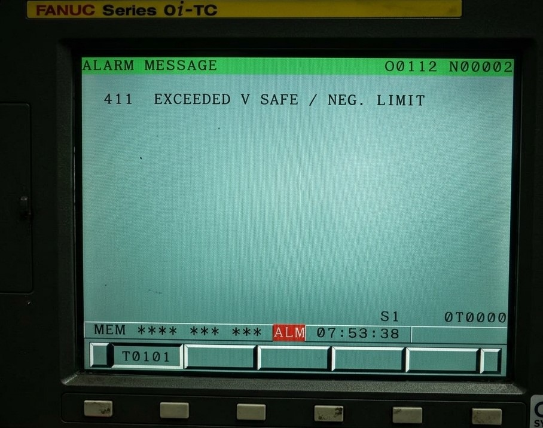

Fanuc Alarm 411
La alarma Fanuc 411: SPINDLE OVERRUN / NEGATIVE OVERTRAVEL

El control CNC muestra la alarma 411, indicando que el husillo ha superado su velocidad segura o que un eje ha alcanzado su límite negativo de recorrido. Esta situación requiere detener la máquina y revisar tanto condiciones de mecanizado como límites de recorrido.
Resumen rápido:
Estado de la máquina: Parada por seguridad.
Causa: Sobrevelocidad de husillo o eje en límite negativo.
Solución rápida: Revisar parámetros, sensores y condiciones de mecanizado.
Nivel de urgencia: Alta.
Causas principales:
- Exceso de velocidad: El husillo supera el límite configurado.
- Error de programación: Valores incorrectos de RPM o avance.
- Fin de carrera activado: El eje alcanza el límite negativo.
- Problema en sensores: Fallo en finales de carrera o cableado.
- Desajuste de parámetros: Límites mal configurados en el CNC.
- Fallo en servo drive: Problemas de control del movimiento.

La alarma Fanuc 411 puede producirse cuando el husillo excede su velocidad segura o cuando un eje alcanza su límite negativo. Este tipo de fallo suele estar relacionado con parámetros incorrectos, sensores o condiciones de mecanizado inadecuadas.
⚠️ ADVERTENCIA: RIESGO DE DAÑO EN HUSILLO O COLISIÓN
La alarma Fanuc 411 protege la máquina frente a condiciones fuera de rango. Ignorarla puede provocar daños graves en el husillo o impactos mecánicos en los ejes.
"Forzar el funcionamiento del husillo o ignorar los límites de recorrido puede causar averías graves en el sistema mecánico y electrónico."
Consecuencia: Desde desajustes en el sistema hasta rotura de componentes críticos como rodamientos, motores o guías lineales.
Se recomienda detener la máquina y contactar con servicio técnico para realizar un diagnóstico completo.
🛠️ ¿Necesita Asistencia Técnica?
Evite pérdidas de producción. Podemos identificar rápidamente el origen del problema y aplicar la solución adecuada.
📞 No dude en ponerse en contacto con nosotros.